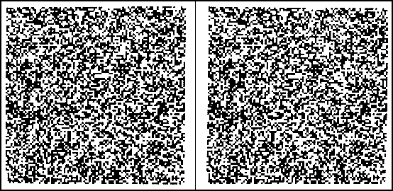

Notes to Mental Imagery
1. One might ask, however, why closing one's eyes or turning one's head away should not count as choosing not to see the elephant. Also, our voluntary control over our imagery should not be overstated. Notoriously, if someone is commanded not to imagine an elephant, almost inevitably they will imagine one; and some images, very often particularly distressing ones, can be very hard to voluntarily dismiss (see Thomas (2014 §§4-5) for elaboration of these points).
2. Indeed, some argue that imagery plays a vital and ineliminable epistemological role in certain scientific (and perhaps, also, philosophical) thought experiments, some of which have played a crucial role in the development of modern science (Brown, 1991; Gendler, 2004; Georgiou, 2007). Giaquinto (1992, 1993) also argues that visualization can sometimes play a crucial role in mathematical discovery.
3. On this point I have relied upon the expertise of Professor Edward Slingerland of the Department of Asian Studies at the University of British Columbia, who supplied the reference. Further corroboration comes from the story of the 16th century Jesuit missionary Matteo Ricci, who attempted to introduce European imagery based mnemonic techniques (see Supplement: Ancient Imagery Mnemonics) into China (Spence, 1985). Although the Chinese scholars were not especially impressed with the practical utility of the elaborate system Ricci presented (they were prepared to believe that it would work, but thought it unlikely to repay the effort needed to learn it) there is no hint that they found the concept of imagery itself in the least unfamiliar or puzzling.
4. Modern scholarly discussions of Aristotle's concept of phantasia include those of Brentano (1886/1977), Beare (1906), Ross (1923), Benardete (1975), Engmann (1976), Frede (1992), Lycos (1964), Modrak (1986, 1987), Nussbaum (1978), Philippe (1971), Rees (1971), Roth (1963), Schofield (1978), Todd (1981), Watson (1982, 1988), Wedin (1988), White (1985), Turnbull (1994), Caston (1996), Niarchos (1997-8), and Birondo (2001). General histories of the concept of imagination, that cover Aristotle's seminal contribution, include those of Brann (1991), Bundy (1927), Cocking (1991), Kearney (1988), White (1990), and Thomas (1999a).
5. Although the Treatise of Man was written relatively early in Descartes’ philosophical career, before the Meditations, and was not published during his lifetime, there is ample evidence in later material such as the Passions of the Soul (1649) and the Conversation with Burman (1648), that he did not repudiate these views, and that they continued to shape his thinking to the end. Furthermore, when the treatise was posthumously published it seems to have had a considerable influence, and, for a while, may well have been more widely read than more purely philosophical works such as the Meditations, where the "clear and distinct ideas" of the intellect are treated.
6. Animal spirit may be identified with what is now called cerebro-spinal fluid, a clear liquid that bathes the brain and spinal cord. The name animal spiritand the notion that it is centrally involved in brain function, and, indeed, in the processes of thought, goes back at least to the Roman physician Galen, and was widely accepted through the middle ages and Renaissance (Woolam, 1957; Finger, 1994). Thus, although Descartes' neural hydraulics may have been fairly original, the idea of animal spirit was quite conventional. Today, cerebro-spinal fluid is held to have an essentially nutritive function for the brain, and not to play any direct role in any cognitive or otherwise mental processes.
7. The retinal image had, at this time, only relatively recently been discovered. Johannes Kepler first described it in 1604 (Lindberg, 1976). Descartes had the Treatise of Man ready for publication in 1633.
8. Descartes held that the pineal gland was full of animal spirit, under pressure, and that the optic nerve (and other sensory nerves) acted upon it via small threads running down the center of each nerve fibre. The pull of a thread would cause a pore to open in the surface of the gland, so that animal spirit was allowed to flow out of the gland, and through the hollow nerve fibre, into the brain. It is the pattern of such open pores in the gland surface that supposedly comprises the image there.
9. In fact, he says it is the seat of "imagination and common sense". "Common sense," however, is not used here in its modern colloquial sense, but refers instead to the Aristotelian notion of a faculty or power of the soul (explained mainly in De Anima III, 2) whereby the deliverance of the various sense organs are brought together into a coherent, unified perceptual experience of the world (Beare, 1906; Ross, 1923; Kahn, 1966; Kosman, 1975; Nussbaum, 1978; Modrak,1981, 1987; Everson, 1997). Likewise, Descartes held that not only visual experience, but other sensory experiences too, were mediated by movements of the pineal gland that were in turn caused by the flow of animal spirit through its surface, under control of the sensory nerves. Aristotle is often, and plausibly, interpreted as understanding this common sense to be very closely bound up with, if not identical to, the phantasia or imagination (De Insomniis 459a 15-20), which is said to be responsible for imagery. When it functions in perception it is appropriately called the common sense, and when it functions in remembering or imagining something, producing imagery, it is called the imagination. Thus, although Descartes may be highly original in the way he mechanizes and anatomically locates these functions, he is not being at all original or controversial in linking them.
10. Spelling, capitalization and emphasis are all as in the original.
11. Very much the same is said in Hobbes' De Corpore (Chap. XXV, 7, in Calkins, 1963).
12. See also De Corpore (Chap. XXV, 7, in Calkins, 1963). Perhaps Hobbes thought of these motions as vibrations that could die away gradually: at any rate, he seems to have believed light to be a form of vibration (Human Nature, chap. 2, in Calkins, 1963), so it would make sense for it to induce vibratory motion in the brain.
13. Scientists would continue to be called "natural philosophers" for some time. The Oxford English Dictionary does not record any use of the word "scientist" before 1834, and its coinage and popularization is often attributed to Whewell (1840). However, the distinction between what we now respectively call science and philosophy was recognized in practice long before that (Gjertsen, 1989). Indeed, it was marked (and perhaps in part initiated) by Locke himself, when he promised not to "meddle with the physical consideration of the mind," (Essay I.i.2), and described himself as a mere "under-labourer" to Newton and the other great scientists of his age (Essay: Epistle to the Reader).
14. The word "imagery" occurs just once in the Essay (II.x.5), and its direct reference is to carvings or other designs on tombstones. However, the point of the passage is to draw an analogy between the "mouldering away" of this imagery with time and the gradual fading of ideas from our memory.
15. It is true that Locke holds that ideas originate not only from "sense" but also from "reflection," i.e., introspection upon the workings of our mind itself. However, in all relevant respects he understands this reflection as just another perceptual sense, an "internal sense" (Essay II.1.4) that just happens to be directed inwards toward the workings of our minds rather than outwards toward the world around us (Ayers, 1991 p. 49).
16. Berkeley did think that we could use our inherently particular ideas to represent generals, i.e., classes of things, as a geometrician might draw a diagram containing some particular straight line of some particular length to illustrate a theorem intended to apply to all straight lines of any length (Principles, Introduction XII). Thus, I might use a picture of Winston Churchill (or a pictorial idea of him, in my mind) to represent all British prime ministers, or all politicians, or all men, or whatever else I might chose. However, it is not clear that this move solves the problem of how we are able to think about classes of things. In order to be able to decide to use my mental picture of Churchill to represent all prime ministers, surely I must already have a general concept of prime-ministerhood, or of the class of all prime ministers. If I do, it is not clear what I would gain by using an imaginal idea to represent this, and Berkeley's story does nothing to illuminate the nature and origin of my (presumably non-imaginal) general concept of prime-ministerhood (or of straight line of arbitrary length, or whatever).
17. Hume seems to use 'fancy' (derived from the Greek phantasia) as nothing more than an alternative name for the mental faculty more commonly known by the Latinate term 'imagination.' Although some medieval and renaissance authors may have suggested distinct cognitive roles for imaginatio and phantasia the distinctions they were attempting to draw never really seem to have caught on (Clarke & Dewhurst, 1972; Harvey, 1975). After Hume's time, Coleridge (1817) used the two terms to draw a distinction between the truly creative imagination and the merely associative fancy, but, despite its fame, this distinction never caught on very widely either, and 'fancy,' in the relevant sense, is now largely obsolete.
18. Another passage in the Enquiry is, in a way, even more explicit:
Our mental vision or conception of ideas is nothing but a revelation made to us by our Maker. When we voluntarily turn our thoughts to any object, and raise up its image in the fancy, it is not the will which creates that idea: It is the universal Creator, who discovers it to the mind, and renders it present to us. (Enquiry VII.1)
Unfortunately exegesis of this is complicated by the fact that Hume is here describing a theory (probably Malebranche's) that he wants to reject. Hume certainly does not think that God is directly responsible for rendering our ideas present to us. However, there is no hint that he is in anything but full agreement with the metaphor of "mental vision" and the notion that to think of an object is to "raise up its image in the fancy."
19. Some of Reid's arguments may require only that ideas be understood as representational entities. However, he frequently states that his predecessors did think of their ideas as images (e.g., 1764 2.III), and chapters 7 and 9 of the second Essay on the Intellectual Powers of Man (1785), go to some pains to pin this doctrine on Locke and others.
20. Bloor (1983) goes so far as to suggest (though without citing any evidence) that the later work of Wittgenstein largely grew out of the reaction to the imageless thought affair. Certainly one of the leading Würzburg school researchers, Karl Bühler, became a prominent psychology Professor in Vienna during the inter-war years, and Wittgenstein is known to have met him there, and seems to have been very struck (probably unfavorably) by his views (Toulmin, 1969; Bartley, 1973). Bühler also taught, and deeply influenced, the young Karl Popper (Popper, 1976), and undoubtedly his views would also have been quite familiar to the Vienna Circle positivists. (In the German speaking world at this time, the fields of philosophy and psychology were still closely institutionally as well as intellectually entwined.)
21. Ever since Galton (1880a, 1883) published his pioneering work on individual differences in imagery experience, it has been “well known” that some small minority of otherwise normal people report that they do not experience visual imagery at all. However, this phenomenon remains very poorly understood. Galton's evidence is essentially anecdotal, and his interpretation of his findings seems to be distinctly suspect (Brewer & Schommer-Aikins, 2006; Burbridge, 1994). Since his time, no systematic, quantitative research seems to have been done on “non-imagers” (although see Sommer (1978) and Thomas (1989) for case studies of individuals, and Faw (1997, 2009) for personal testimony and discussion). Even the incidence, in the general population, of people who deny that they experience imagery, remains unknown (figures ranging from 10-12% (Abelson, 1979) to “less than 2%” have been suggested, but I have been able to locate no sign of an objective basis for any of these estimates). Despite this, both Danto (1958) and Lawrie (1970) insinuate that Ryle's views on imagery are only explicable if he was a “non-imager” of the sort described by Galton. Hannay (1971) (although he soon retreats) floats the same notion with regard not only to Ryle, but also to Shorter and Sartre. (Others have, reductionistically, attempted to explain even historical philosophical disputes, such as those amongst the 18th century Empiricists about the properties of ideas, in a similarly ad hominem way, as arising from individual differences in the vividness of imagery experienced by the parties involved (Fraser, 1891; Berman, 2008). Of course, there is no independent evidence whatsoever that these parties actually did have the postulated subjective differences in their imagery experience.) Similar ad hominem dismissals of anti-pictorialist arguments can also be found amongst contemporary psychologists. Kosslyn, for example, speculates that the leading anti-pictorialist psychologist, Pylyshyn, may be “one of the few (…) people who does not experience imagery” (see “What Shape Are a German Shepherd's Ears?” in Other Internet Resources, which is also the source for the “less than 2%” estimate for the proportion of non-imagers in the general population; and c.f. Lewis, Borst & Kosslyn (2011 p.259)). Pylyshyn has responded to this with a direct denial (see “What Shape Are a German Shepherd's Ears?” in Other Internet Resources), although, in fact, an attentive reading of his earlier writings on imagery would already have shown him frequently taking pains to make it clear that he in no way intends to cast doubt on the reality of imagery experience. There is some evidence that when people know relatively little about the theoretical issues and empirical evidence concerning imagery there is a correlation between their inclination to believe in inner pictures and the (introspectively reported) vividness of their imagery (i.e., people with more vivid imagery are more likely to believe in inner pictures). However, this correlation disappears once they know more about the issues and evidence (Reisberg, Pearson, & Kosslyn, 2003).
22. Sartre, indeed, is said to have experimented with the hallucinogenic drug mescaline as a young man, and to have not only experienced vivid hallucinations during his actual “trip,” but also distressing hallucinatory “afterflashes” for a considerable time following it (de Beauvoir, 1960; Riedlinger, 1982). As for Ryle, it is quite clear, particularly from chapter 3 of his On Thinking (1979), that although he did not regard all thought, or even all imaginative thought, as necessarily involving quasi-visual experience, he certainly accepted that it sometimes does.
23. Bugelski himself was a significant participant in this research activity (e.g. Bugelski, 1970, 1971; Bugelski, Kidd, & Segmen, 1968).
24. Imagery values were determined by averaging the results of numerical ratings produced by many subjects filling out a specially designed questionnaire (Paivio, Yuille, & Madigan, 1968).
25. The difference in memorability of the two sets of words is not in dispute. What has been much disputed, however, is whether the difference in imagery value (or imagability) really causes the differences in memory performance, or whether some other semantic feature of the words (something highly correlated with, but not identical to, imagery value) is the true cause. For example, Richardson (1975) once held concreteness to be the main causally effective variable, but later changed his mind in the face of further evidence (Richardson, 1980 p. 93). Another suggestion is that the predicability of the nouns in question (i.e., “the ease with which what they refer to can be described by simple factual statements”) might be the true causally effective parameter (Jones, 1986). Measures of predicability correlate quite well with imagery value, and it is quite plausible that more predicable words might spontaneously give rise to more extensive networks of verbal associations that might account for their greater memorability. In fact, upwards of thirty such alternatives to imagery value have been proposed over the past few decades, but the consensus seems to be that none of them has proven able to account for the full range of the empirical evidence as accurately and comprehensively as imagery value itself (Marks, 1997; see also Paivio, 1983a, 1991a, 2007). Nevertheless, it is clear, if only from the fact that so many alternative explanations have been proposed, that doubts about Paivio's imagery based explanation of his experimental data remain persistent and deep rooted. These doubts may be partly motivated by lingering doubts about the very reality of imagery, but the more important motivation is probably a commitment (itself motivated by broader theoretical or metatheoretical considerations) to some version of a common coding view of mental representation (see Supplement: Dual Coding and Common Coding Theories of Memory).
26. In the article that kicked off the analog/propositional debate (Pylyshyn, 1973) the expression "propositional representation" was restricted to computational representational schemes based on predicate calculus notation. However, the expression came to be applied, by Pylyshyn and others, much more widely in later discussions. The advantage of the term 'proposition,' in this context, is that it emphasizes the point that what is being contemplated are not natural language sentences (i.e., sentences of English, Russian, Chinese, Latin, or whatever), not the sort of natural language verbal mental representations advocated by theorists such as Paivio (1971, 1986), but, rather, unconscious computational representations of unknown lexicon and syntax (perhaps identifiable with the deep structure representations of sentences of Chomskian linguistic theory). Unfortunately, as noted, this usage is importantly different from what 'proposition' has long meant to philosophers (Gale, 1967).
27. The word 'analog' was originally mainly associated with the views of Shepard, who played an important role in the earlier stages of the debate, and who may have been envisaging truly analog processes, as in an analog computer (Shepard, 1975, 1978b, 1981, 1984; Shepard & Cooper et al., 1982). However, although his experimental findings remain important, Shepard's theoretical ideas have long since been overshadowed, in the development of the debate, by those of Kosslyn. Since the later 1980s Kosslyn has been more concerned with the neuroscience of mental imagery than with the computational model that was central to his earlier work, but there is no reason to think that this has made his theory any more analog, and, in fact, he rarely uses the term.
28. In the same year, some very similar arguments were independently made by Anderson & Bower (1973).
29. Most defenders of the analog/pictorial theory of imagery, such as Kosslyn, Thompson & Ganis (2002), do not dispute that imagery is cognitively penetrable. Their quarrel is with other aspects of Pylyshyn's argument.
30. Of course, there had previously been other suggestions for non-pictorial accounts of imagery, most notably the attentional theory of Ribot (1890, 1900), the motor theories of Dunlap (1914), Washburn (1916), and Wekker (1966), the behaviorist theory of Taylor (1973), and the enactive (or perceptual activity) theories of Hebb (1968), Hochberg (1968), and Sarbin & Juhasz (1970; Sarbin, 1972). However, none of this work had very much impact in its time, and, even today, few are aware of any of it. As far as I am aware, no-one ever seriously contemplated the notion that mental images might not be picture-like entities before the late 19th century. In more recent times, however, not only description theories of the kind advocated by Pylyshyn, but also more developed forms of enactive theory, have begun to receive some attention. Enactive theories will be discussed in section 4.5.1.
31. Pylyshyn (1973) also
makes this argument, although he does not cite either Shorter or
Dennett. They all argue that mental images can be indeterminate or
inexplicit in what they represent, in a way that pictures cannot
be. Perhaps the clearest and best known example of the argument is
that of Dennett (1969 pp. 135-7; cf. Chisholm, 1942), who claims that a
mental image of a tiger may be quite inexplicit as to the number of
stripes it shows, whereas any picture of a tiger would have to show a
particular, countable number of stripes. Of course, a description of a
tiger could perfectly easily be inexplicit in the relevant way,
perhaps by just saying something like, "It has several stripes." Thus,
it is argued, mental images are in some important way, more like
descriptions than like pictures.
For some reason, this argument
continues to get trotted out, even though numerous critics have
pointed out several serious flaws in it (Price, 1953; Hannay, 1971;
Fodor, 1975; Shepard, 1978b; Block, 1981a, 1983b; Lyons, 1984; Tye,
1991; Cohen, 1996), and few if any attempts have been made to rebut
these critiques (Simpson (1985) is an exception, but of limited
scope). For one thing, is by no means clear that mental images really
are inexplicit or indeterminate in the relevant sort of way. Just
because one may not, in practice, be able to count the stripes on
one's tiger image, it does not follow that it does not have a
determinate number of stripes. Several things well short of actual
indeterminacy, such as the tendency of images to fade from
consciousness quite quickly, might prevent one from
counting. Furthermore, it is not clear that it is really the case that
pictures cannot be inexplicit in the relevant way (consider, for
example, a rough, impressionistic sketch of a tiger, or a blurred
photograph). Frankly, given the complicated and irregular pattern of
tiger markings, it is not at all clear to me that even an actual tiger
has a determinate number of stripes (certainly I do not want the job
of counting them). Fortunately for Pylyshyn, he is able to marshal
several other arguments against picture theory, so neither his
case against picture theories of imagery, nor his
case for the description theory, depends upon this argument
from image indeterminacy.
32. Pylyshyn (1973) also discusses alternative suggestions from other sources about how visuo-spatial descriptions might be represented computationally, and does not attempt to advocate one such scheme over another. However, to the best of my knowledge, only Simon, Baylor, and Moran were, at this time, explicitly and publicly claiming that such representations were models of mental imagery. Pylyshyn makes it clear that it was Baylor's work, especially, that inspired him.
33. In fact Fodor (1975) did not address Pylyshyn's work at all. However, he argues against Dennett's (1969) version of the "inexplicitness" (striped tiger) objection to mental pictures at some length (see note 31, above), and briefly criticizes the homunculus objection.
34. Emphasis in original.
35. Although Finke's work in this area is perhaps the most striking, other experimenters have also found that certain specifically visual effects, such as illusions and aftereffects, normally induced by specific visual stimuli, can be induced by appropriate mental imagery (Erickson & Erickson, 1938; Barber, 1959; Pressey & Wilson, 1974; Kunen & May, 1980; Wallace, 1980, 1984; Berbaum & Chung, 1981; Kosslyn, Sukel, & Bly, 1999). However, some of these findings (including some of Finke's) have not replicated reliably (Broerse & Crassini, 1980; Reisberg & Morris, 1985), and many if not most of the results are very vulnerable to the criticism that they may reflect the demand characteristics (see supplement) of the experiment rather than genuine cognitive mechanisms (Harris, 1982; Broerse & Crassini, 1984; Predebon & Wenderoth, 1985), or else they are open to alternative explanations that are more consistent with description theory (Pylyshyn, 2002a, 2003b), a point that Finke himself now seems to accept (1989 ch. 2). Despite this, however, the threat these results pose to description theory may not have been entirely defused (Thomas, 1987, 1999b), especially as much neurophysiological evidence now points in the same direction.
36. See supplement: European Responses: Jaensch, Freud, and Gestalt Psychology.
37. Neisser (1967) had been an influential pioneer of the application of the computer metaphor to psychology, but by or before 1976 he had come to have serious reservations about it.
38. At this time virtually all computer monitors were CRT (Cathode Ray Tube) displays, and Kosslyn sometimes describes the theory as based upon a "CRT display metaphor."
39. Since the mid 1980s Kosslyn has turned more and more to neuroscience rather than computational modeling, both as a theoretical idiom and as a research strategy (see Supplement: The Quasi-Pictorial Theory of Imagery). However, there is little sign that he has thereby abandoned the functionalist commitments of his earlier work. Kosslyn & Hatfield (1984), reaffirm a commitment to functionalism, and even to computationalism broadly conceived, even while critiquing the symbolic computer programming idiom in which Kosslyn's earlier theoretical work had been couched. Kosslyn's more recent work on imagery can be seen as an exploration of just how and where the various component functions of his original computational theory (revised in certain details) might actually be implemented in the brain.
40. The underlying similarity of these diversely expressed theories is recognized by Morris & Hampson (1983), Thomas (1987, 1999b), and Hochberg (2001). Unfortunately, however, it was little recognized at the time most of the versions were being proposed, so the terms suggested here to describe them are all more or less anachronistic: "enactive" comes from Noë (2004) (although he does not apply it explicitly to imagery), and is applied to imagery theory by Thomas (2009, 2014), Sima (2011, 2013, 2014; Sima & Freksa, 2012), and Troscianko (2010, 2013, 2014a,b); "sensorimotor" comes from Newton (1993, 1996) and O'Regan & Noë (2001); and "perceptual activity" from Thomas (1999b), Blain (2006), and Agnati et al. (2013). De Preester (2012), although she refers to the recent work of Thomas, and of O’Regan & Noë, mostly favors the older term, “motor theory”. Morris & Hampson (1983), who were perhaps the first to recognize the common theme in some of these theoretical proposals, refer to them as "role playing theories," but this is not a very happy choice of terminology. Although Sarbin and Juhasz (Sarbin & Juhasz, 1970; Sarbin, 1972) explicitly make theoretical use of the concept of role playing (or “role taking”), this is not true to any significant degree of any of the other theorists in question (and certainly not Neisser (1976, 1978a,b), whose views are actually the main focus of Morris & Hampson's discussion).
41. Others, such as Janssen (1976b) and Morgan (1979) show signs that they were thinking along similar lines, but they never developed the relevant ideas very far. Shepard (1978b), with his remarks about imagery as perceptual anticipation, and Paivio, when he says that imagery is akin to "active perception" (1977), may also be leaning in this direction. Certainly both Shepard and Paivio repudiate computational models.
42. Perhaps relevant answers may also be sought in the information carried by in internal formations, such as the sensorially generated activation pattern in the retina, or the cochlea of the ear, or in the brain's retinotopically mapped visual cortex, (Thomas, 1999b, 2009). Such activation patterns are not (pace Kosslyn) mental representations (Meijsing, 2006): there is no reason to believe (and good reason to disbelieve) that they bear intentionality or that they are suitable for manipulation as representational tokens in thought processes or computations, and, as modern neuroscience shows (Lamme et al., 2000; Rees, Krieman, & Koch, 2002; Koch, 2003 ch. 6; Meyer, 2011) they are not inherently conscious states. Nevertheless, they bear information about the layout of the environment, much as a shadow does, or an optical image in a camera obscura, and thus may be interrogated by internal active perceptual processes in a way analogous to that in which our external sense organs interrogate the information bearing formations (such as the optic array) in the external environment itself (Thomas, 1999b, 2009). There is growing evidence that this sort of internalized active perception really does occur, both in vision (e.g., Li et al., 2004; Reynolds & Chelazzi, 2004; Liu et al., 2007; Serences & Boynton, 2007; Kveraga et al., 2007; Gilbert & Sigman, 2007; David et al., 2008; McAlonan et al., 2008; Bressler et al., 2008; Kelly et al., 2008; Munneke et al., 2008; Jehee et al., 2011; McManus et al., 2011), and in other sense modes (Fritz et al., 2003, 2005; Zelano et al., 2005, 2011; Nitschke et al., 2006; Samuelsen et al., 2012). This converging evidence comes from both fMRI and other studies on human subjects (non-invasive, but low spatial and temporal resolution techniques) and from high-resolution studies on the activities of individual neurons, using electrodes implanted in animal brains. There are good reasons to believe that these internal active-perception processes (together with their external counterparts) play a key role in generating conscious perceptual experience (Marcel, 1983; Lamme & Roelfsema, 2000; Pascual-Leone & Walsh, 2001; Gilbert & Sigman, 2007; Gaillard et al., 2009; Meyer, 2011).
43. Although perceptual information processing presumably entails much activity in a perceiver's brain, this is conceived to be mainly driven "bottom-up" by the sensory input. It is thus not action, not something done by the organism, but rather something that happens to it. Thus it would not lend itself to being intentionally re-enacted in the sense envisaged by enactive imagery theories. (In practice most versions of information processing theory make some appeal to a top-down as well as a bottom-up flow of information, but the latter is always seen as primary, with the top-down component merely modulating the bottom-up flow. The notion that the process is driven by the information flowing inward, from periphery to center, remains the defining characteristic of theories of this sort.)
44. It is no accident that Neisser's enactive theory of imagery draws heavily on Gibson's (1966) theory of perception, which firmly rejected the information processing perspective (and, indeed, cognitivism in general). However, although Gibson had some enthusiastic followers, they were, and have remained, a small and embattled minority amongst perceptual psychologists (and few of them, apart from Neisser, have taken much interest in imagery).
45. It has been shown that "active perception" behavioral routines of the sort discussed here can (under conditions of simulated natural selection) spontaneously evolve in simple robotic systems, enabling the robot to use a quite rudimentary endowment of sensory transducers to make surprisingly subtle and complex perceptual distinctions (Nolfi & Floreano, 2002). The sense of perceptual presence that such a system is claimed to support has been called the "immanence illusion" (Minsky, 1986), the "refrigerator light illusion" (Thomas, 1999b; Block, 2001, 2007), and even the "grand illusion" (Noë & O'Regan, 2000; Noë et al., 2000). However, Noë, while fully endorsing the underlying concept, in fact argues that it is misleading to think of this as an illusion (2002, 2004). This is what perceptual presence is.
46. A number of related findings point in the same direction:
- There is also now considerable evidence to suggest that the eye movements of REM sleep (or some of them) are enactments of the movements that would be made if the dreamer were actually seeing the things being dreamed about. Early findings to this effect (Dement & Kleitman, 1957; Dement & Wolpert, 1958; Schiff et al., 1961; Roffwarg et al., 1962; Berger & Oswald, 1962) were met with some skepticism, and proved difficult to replicate (Moskowitz & Berger, 1969; Jacobs et al., 1972; Koulack, 1972; Firth & Oswald, 1975). However, more recent research, using the much improved eye-tracking technology available today, seems to have largely removed the reasons for doubt, and to have confirmed the original claims (Herman et al., 1984; Hong et al., 1997, 2009; Doricchi et al., 2007; Sprenger et al., 2010; Leclair-Visonneau et al., 2010; see also Hobson, 2009).
- Bensafi et al. (2003) found that when people are imagining particular odors they spontaneously sniff in a way that re-enacts the distinctive sniffing pattern observed when they actually smell an odor of that type.
- Some researchers have found that, under the right conditions, the tracking (as opposed to saccadic) eye movements made when visually following a moving stimulus are also re-enacted when imagining such a motion (Antrobus, Antrobus, & Singer, 1964; Deckert, 1964; Brown, 1968; de’Sperati & Santandrea, 2005) (however, others (Lenox et al., 1970; Zikmund, 1972) have disputed these claims).
- Ruggieri & Alfieri (1992) found that the crystalline lens of the eye behaves in imagery as in perception, focusing further away when objects are imagined as far away, and closer when objects are imagined as close.
- Laeng & Sulutvedt (2013) have recently found that the pupil of the eye contracts when imagining brightly illuminated scenes and dilates when imagining more dimly lit ones, thus enacting what it does when we actually see scenes of different brightnesses.
47. Although the human retina as a whole takes in light from a visual solid angle of about 200°, the fovea, the central part of the retina, which has the greatest visual acuity (because it is where the light sensitive cells are packed most closely together), and where most of the color sensitive cone cells are found, only receives light from about 2° of visual angle, “about the size of a thumbnail at arm’s length” (Richardson & Spivey, 2004). Despite this, it seems to be the fovea that does the lion’s share of the work of normal human perception, under good lighting conditions (i.e., not darkness or semi-darkness, when low acuity, monochrome, rod-vision takes over). Although the fovea occupies only about 1% of the entire retinal surface, about half of the retinotopic map in primary visual cortex (V1) is devoted to it (Petersen & Diamond, 2001). Thus, our ability to recognize objects and colors in peripheral vision (i.e. using just parts of the retina outside the fovea) is quite limited. Most of the cone cells are in, or fairly close to, the fovea, and, as one moves outwards into the periphery, they soon become very sparsely distributed. The light sensitive cells in the peripheral retina are not only relatively widely spaced (and so unable to resolve much detail), but are mostly rods, which do not register color at all, and which do not function except in low light (Curcio et al., 1987, 1991; Roorda & Williams, 1999; Roorda et al., 2001; Conway, 2009). Thus, the ability of regions of the human retina to distinguish colors (and significant detail) falls off rapidly as we move outwards from the fovea, and color vision seems to disappear altogether beyond about 70° from the foveal center (Wooten & Wald, 1973). (The main function of daytime peripheral vision seems to be the detection of movement, which attracts the attention, and usually leads to the making of a saccade that brings whatever is moving into foveal vision, where it can be recognized.) We only experience our visual world as rich in detail and color throughout because we normally (unconsciously) saccade to new fixation points, focusing new regions onto the fovea, several times every second (Richardson & Spivey, 2004; Holmqvist et al., 2011). (See Thomas (2014 §5) for a more extensive discussion of the modern science of eye movements and its implications for the philosophy of perception and imagination.) Thus, if mental images were quasi-pictures, equivalent to “retinal snapshots” taken during the brief intervals of eye fixation (relative stillness) that occur between major saccades (as Kosslyn usually seems to hold), only a very small part of any image would appear detailed and colored. This does not seem to match most people's imagery experience, and does not appear to be consistent with most accounts of the cognitive properties and functions of imagery. In response to this problem (and to the findings of Laeng & Teodorescu (2002) concerning eye movements during imagery), Mast & Kosslyn (2002b) suggest that our imagery of a visual scene may consist not of a single retinal snapshot, but, rather, of a sort of montage of the foveal parts of a whole series of such snapshots, “pasted together”, as it were, to create an image of the scene as a whole:
One possibility is that eye movements are stored in memory along with the images [i.e., quasi-pictures] that were encoded at each fixation. If so, then eye movements might play an important role in allowing one to visualize a montage, a composite created on the basis of memories of multiple fixations. That is, eye movements could trigger sequences of memories and could also help us to position correctly each image of a part of the field relative to other parts. (Mast & Kosslyn, 2002b p. 271; see also Kosslyn, 1994 p. 250).
However, despite the fact that this proposal appears to be a significant departure from earlier versions of quasi-pictorialism, Kosslyn scarcely mentions it in his subsequent theoretical writings, such as his 2005 review article, or his most recent book on imagery (Kosslyn, 2005; Kosslyn et al., 2006), and it is not at all clear that it is consistent with other important aspects of his theory, such as the accounts given elsewhere (Kosslyn, 1980, 1994) of mental scanning (a phenomenon of central theoretical importance for Kosslyn), of the fading of images (see Sima, 2014 p. 43), and his claim to have measured the “visual angle of the mind’s eye” as encompassing about 30° (Kosslyn, 1978a). It also seems to be at odds with current ideas about how it is that we normally see the world as essentially stable, despite the fact that the image on the retina (and thus also its representation in the retinotopic maps of the early visual system) constantly jitters about, changing frequently, rapidly, and irregularly as the eyes move. The subjective stability of most of what we see implies that the immediate object of visual experience is not (as Kosslyn’s theory of the visual buffer would suggest) these retinotopic representations, but the world itself (which, thankfully, mostly does remain stable as our eye movements sample its details). Furthermore,
Little is carried over from one fixation to the next; we do not build a visual world by pasting together samples calibrated with efference copy, but simply perceive what is currently available, plus a gist and a few previously attended objects. (Bridgeman, 2010 p. 71f.; see also Bridgeman et al., 1994)
If vision itself does not involve the “pasting together” of little foveal snapshots into a “montage” of the larger scene, it hardly seems likely that visual imagery would work that way.
48. The points are not unconnected. Thomas (2006) argues that the concepts of consciousness and imagination are much more closely connected with one another than is commonly realized; that, indeed, before the 17th century, imagination occupied a very large part of the conceptual space since taken over by consciousness.
49. Aristotle, who may well be said to have invented the concept of imagination (Juhasz, 1971; Schofield, 1978; and see Rees, 1971 n.7), defined it [phantasia] as "(apart from any metaphorical sense of the word) the process by which we say that an image is presented to us" (De Anima 428a). During later antiquity, the Aristotelian concept of phantasia developed into the richer Latin concept of imaginatio (which became our imagination) (Watson, 1988; Cocking, 1991). Virtually every philosopher, from ancient times until well into the 20th century, implicitly accepted Aristotle's definition (White, 1990 part 1; Brann, 1991; Thomas, 1999a), and most modern dictionaries still say something similar. The currency of the idea that imagination is the source of artistic creativity (and, latterly, creativity in other spheres, such as science (e.g., Tyndall, 1872; Van't Hoff, 1878; Brown, 1991; Holton, 1996; Gendler, 1998; Georgiou, 2007)) is largely due to the 18th and 19th century Romantic movement; although the idea has been traced back as far as Flavius Philostratus' Life of Apollonius of Tyana (6 §16, in Conybeare, 1912), written in the 3rd century A.D. (Saintsbury, 1900; Osbourne, 1968; Cocking, 1991; see also Kearney, 1988). The connection here with imagery remains strong. Philostratus (or Apollonius, whose words are supposedly being reported) argues that, as opposed to simply producing a likeness of a living model, when a sculptor produces a statue of a god whom he has never actually seen, he must be relying upon his imagination (i.e., he must form a mental image to stand in place of the living model). It is clear that both Philostratus and the Romantic theorists of imagination continued to believe that 'imagination' primarily means the power to produce or experience imagery (Robson, 1989; Brann, 1991). For Coleridge (1817) the power of artistic creativity is, quite explicitly, "secondary imagination."
50. In The Concept of Mind (1949), Gilbert Ryle declared that "There is no special Faculty of Imagination, occupying itself single-mindedly in fancied viewings and hearings", and in the latter half of the 20th century such deflationary views of the imagination (perhaps in reaction to its earlier inflation by Romanticism) became commonplace amongst analytic philosophers (see Thomas, 2014). Not only was the faculty qua faculty called into question, but the very notion of imagining. Many late 20th century philosophers held, in effect, that 'imagine' is a polysemous verb, used to mean different, sometimes quite unrelated, things on different occasions: visualize, think creatively, believe falsely, suppose, pretend, and so on (e.g.: Flew, 1953; Strawson, 1971; Gross, 1973; Dix, 1985; Newton, 1989; Sparshott, 1990; Walton, 1990; Stevenson, 2003). By contrast, White (1990 part 2) argued that 'imagine' does have a true meaning – it means something like "think of as possibly being so" – but that it has no conceptual connection whatsoever with imagery. Views similar to White's now seem to be quite widespread, though they are rarely defended in any detail (if at all) (e.g.: Rorty, 1988; Nozick, 1993; Johnson, 1993; Nichols & Stich, 2000, Byrne, 2005). Of course, other contemporary philosophers of imagination do not share these deflationary views (e.g.: Warnock, 1976, 1994; Brann, 1991; Thomas, 1999a; McGinn, 2004; Crowther, 2013), and the view that imagination is a coherent concept, closely related to the concept of imagery, has been explicitly defended by Thomas (1997a, 1999b, 2014) and Kind (2001).
51. This view also finds some support in the arguments of Rowlands (2006a, 2006b) and Lycan (2006). They argue that (despite what Noë (2004) and other enactive theorists, such as Gibson (1966, 1979), have said) it makes sense to think of enactive perception as giving rise to intentional representations. These need not, however, be the sort of internal symbolic tokens to which enactivists object. Sensorimotor activity itself, it is suggested, can function representationally (Rowlands, 2006a, 2006b; see also Bickhard & Richie, 1983; Heil, 1998 ch. 6; Meijsing, 2006).
52. But Paivio (1971, 1986), amongst others, holds that imagery can be at work in our cognitive processes without our being consciously aware of it. The question is whether such unconscious perceptual representations deserve to be called mental images, and the answer will depend, at least in part, on whether one has a representational or an experiential concept of imagery (see section 1).
53. Abell & Currie (1999), however, argue, as simulationists, against quasi-pictorial theory, and there is little sign that they are any more sympathetic to “propositional” description theory (see also Abell, 2005). Furthermore, Johansson et al. (2006) interpret Barsalou's remarks about simulation as committing him to some form of enactive theory.
54. Fodor, of course, is the leading proponent of the view that all mental representation is, or depends upon, mentalese, the amodal language of thought. However, according to Cummins (1989) Locke (who, of course, shares Prinz's empiricist/perceptual view of concepts) also held a covariational theory of representational content.
Notes to Supplement: Other Quasi-Perceptual Phenomena
1. For more on Jaensch, and the racialist framework within which his theory of eidetic imagery was developed, see Supplement: European Responses: Jaensch, Freud, and Gestalt Psychology.
2. Random dot stereograms were introduced by Julesz (1971) as a tool for studying stereoscopic vision. An illustrative example (somewhat imperfect, owing to the limitations of web graphics) is shown in figure 1. The two sides of the stereogram are identical except that the dots in a square region in the center of the left-hand image have been shifted a little to the right as compared with those in the right-hand image. This difference is too slight to be visible to even quite careful inspection. However, when the stereogram is viewed through a stereoscope so that the left-hand pattern is presented only to the left eye, and the right-hand only to the right, they will fuse into a single square percept with the central, shifted, square region appearing raised in depth. Of course, the shifted area does not have to be square, so other raised (or depressed) shapes can also be obtained.

Figure 1 (notes)
Example of a Random Dot Stereogram (Julesz, 1971).
According to Stromeyer (1970; Stromeyer & Psotka, 1970), the subject Elizabeth viewed one side of a million-dot stereogram, and then was able to use her eidetic image of it to see the three dimensional shape when presented with the other half of the stereogram some four hours later. This would require, at a minimum, a pixel perfect memory for the exact relative positions of several tens of thousands of dots. She was also shown four different versions of the right-hand part of a 10,000 dot stereogram (each with a different shaped region shifted relative to the left-hand image), and then the next day was shown the corresponding left-hand pattern. It is reported that she was then able to use her eidetic images of each of the four versions of the right-hand pattern, in turn, to experience four differently shaped regions standing out in depth. Given what is now known about the (relatively low) resolving power of the various components of the human visual system (retina, primary visual cortex, etc.) (Van Hooser & Nelson, 2005; Petersen & Diamond, 2002), and given also that other accounts of eidetic imagery describe the images as fading, and becoming irretrievable, a minute or so after the original stimulus has been removed from view (Haber, 1979), it is hard to understand how such feats could truly be possible. Although there are well attested reports in the psychology literature of other people with remarkable mnemonic abilities (with what are popularly, though misleadingly, called "photographic memories"), none of their genuinely impressive accomplishments remotely resemble this feat ascribed to Elizabeth (Neisser, 1982 Part 7).
Notes to Supplement: From the Hellenistic to the Early Modern Era
1. Not to be confused with his uncle, also a philosopher, Giovanni Pico della Mirandola.
Notes to Supplement: Edward B. Titchener: The Complete Iconophile
1. Although many philosophers now associate this view mainly with Berkeley's immediate target, Locke (1700), in fact it goes back at least to Aristotle (De Intrepretatione 16a; De Anima 420b), and, indeed, went virtually unquestioned by language theorists throughout the intervening centuries (Wollock, 1997).
Notes to Supplement: The Perky Experiment
1. But see Schwitzgebel (2004) for a qualified defense (and description) of Titchener's introspective methodology. The reputation of Wundt, who did not use introspection of this now deprecated kind (Danziger, 1979, 1980), has seen a considerable revival in recent decades (e.g. Blumenthal, 1975; Bringman & Tweney, 1980; Fancher, 1996).
2. It is not apparent that Perky took any deliberate steps to induce relaxation in her subjects, but Segal found it essential. Segal attributes this difference in their findings to the fact that her subjects, unlike Perky's, were drawn from among “the suspicious, pragmatic students who populated our campuses in the late 1950s and early 1960s” (Segal, 1971b). Thanks to Orne (1962) and others, psychologists today are very much more alert than they once were to the need to take account of the social psychology and social context of the experimental situation when working with human subjects (see supplement: The Problem of Demand Characteristics in Imagery Experiments).
Notes to Supplement: European Responses: Jaensch, Freud, and Gestalt Psychology
1. Furthermore, according to Brewer & Schommer-Aikins (2006; see also: Burbridge, 1994), Galton's claims in this regard are not truly supported by the actual data he gathered, as well as being contradicted by the results of their own attempt to replicate his findings. They conclude that there is no good reason to believe that scientists tend to be unusually deficient in imagery.
2. More recently, reflective scientists and engineers seem more likely to claim that imagery plays a vital role in their professional thought processes (Ferguson, 1977, 1992; Shepard, 1978a,b; Deutsch, 1981; Miller, 1984; Barsalou, 1999; Damasio, 2003).
Notes to Supplement: The American Response: Behaviorist Iconophobia and Motor Theories of Imagery
1. Watson also mentions Fernald's (1912) work on imagery types in this connection. Many psychologists in this period believed that people could usefully be classified into psychological types according to the preferred or predominant sensory mode of their imagery. Thus some people ("visiles") might think mostly in visual imagery, others ("audiles") in auditory imagery, others in motor or kinaesthetic imagery ("motiles"), and so on, and these types might be expected to be found to correlate with individual differences in cognitive abilities or personality (see Angell, 1906 chap. 8, p. 165). Fernald's findings indicate that the classification of people into imagery types was likely to less straightforward than had previously been realized, as the modes of imagery people report are sensitive to situational and contextual variables. I know of no evidence, however, that, when Watson was writing, anyone but he saw Fernald's work as throwing the theory of imagery types (let alone the very concept of imagery, or psychology itself) into crisis. Neither Fernald herself, nor Titchener (1914) seem to have thought it did, and certainly her work aroused nothing like the widespread controversy of the imageless thought debate. Fernald's work did perhaps pave the way for quite devastating critiques of imagery type theory by the likes of Thorndike (1914 ch. 16) and Griffits (1927). The theory has never recovered from those critiques, but they came later.
2. Berman & Lyons (2007) consider, but reject, the possibility that, some time between 1908 and 1913, Watson may have been the victim of some sort of neurological event that caused him to lose and forget his former ability to experience mental imagery. There are several cases described in the neurological literature in which people have lost their onetime ability to consciously experience visual imagery, due to some sort of brain damage, even though their perceptual abilities remained relatively unimpaired (Brain, 1954; Basso et al., 1980; Riddoch, 1990; Goldenberg, 1992; Young & van de Wal, 1996; Moro et al., 2008). (The condition is sometimes referred to as “Charcot-Wilbrand” syndrome, but this inaccurate. Although it does seem to have been first described by Charcot (Young & van de Wal, 1996), the case of so-called “mind blindness” described by Wilbrand in 1887 was, in fact, a case of neurological visual impairment without accompanying loss of imagery (Solms et al., 1996).) In most of these cases, however, the brain damage does give rise to other fairly obvious cognitive impairments of some sort, none of which Watson seems to have suffered from. However, more recently, Zeman et al. (2010) have described a case in which a man apparently suddenly lost his former ability to experience visual imagery (presumably due to a very mild, virtually symptomless stroke) without showing any sign of other significant impairments. It is not impossible that Watson may have experienced a similar event. It remains unlikely, however, given Watson's relatively young age at the time, and the fact that he does not seem to have suffered from any further strokes or other neurological problems around this time. Furthermore, unlike Watson, Zeman’s patient (in common, indeed, with the patients in the other cases of neurological loss of conscious imagery, just mentioned) was in no way inclined to deny that other people experience visual mental imagery, or that he himself had once done so. Indeed, it was concern about the change he noticed in his mental experience that let him to consult a doctor about it, and so bring it to scientific attention.
3. Skinner, it should be said, resisted the reification of experiences in general quite as much as he resisted that of images in particular.
Notes to Supplement: Dual Coding and Common Coding Theories of Memory
1. That is not to say that Dual Coding theory provides the only viable account of the selective interference phenomenon. In fact, selective interference is also often discussed in the light of the Working Memory theory of Baddeley (1976, 1994; Baddeley & Hitch, 1974; Logie & Baddeley, 1990). According to this theory, the working memory system (roughly equivalent to what other psychologists call short term memory) consists of a central executive that controls a number of semi-independent “slave” subsystems, the most important of which are the articulatory (and/or phonological) loop (that holds and manipulates verbal material in consciousness) and the visuo-spatial scratchpad (that does the same for imagery). Two tasks that simultaneously call upon the same subsystem may be expected to interfere with each other. Baddeley, unlike Paivio, does not seem to be committed to the storage of imaginal and verbal memories in separate long term memory stores. However, it is arguable that for many purposes, including the explanation of selective interference and many mnemonic effects, Working Memory theory and Dual Coding theory function not so much as rival theories, but as alternative formulations of essentially the same theoretical model (Marschark & Hunt, 1989).
Notes to Supplement: Conceptual Issues in Dual Coding Theory
1. Codes are systems of representations, and in the context of the discussion of Dual Coding theory, we are talking about types of mental representation of which we can, at least potentially, be directly conscious, as we often are conscious of both imagery and of “inner speech”. None of the arguments made in this section are intended to rule out the possibility that cognition might also involve other sorts of non-conscious representational codes. These might inlcude not only mentalese (conceived as the underlying code of our thought processes), but also, perhaps, specialized representational systems involved in the processing that (on some views) goes on within informationally encapsulated mental modules, including, perhaps, sensory processing modules (Fodor, 1983; Pylyshyn, 2003 b).
2. A fully consistent defense of the unity and cohesiveness of the imagery code may not be entirely compatible with this sort of Empiricism. But although Paivio (1986) explicitly claims to be an Empiricist, this seems to be mainly a way of indicating his commitment to the primacy of the experimental method in science, as opposed to “rationalistic” methods like computer simulation. In fact, he explicitly rejects the wax impression metaphor that is central to the traditional Empiricist understanding of perception and imagery (and from which, of course, the very notion of a “sense impression” derives) (Paivio, 1977).
3. The rejection of the Empiricist picture of perception, amongst both philosophers and cognitive scientists, takes many and various forms, but many recent theorists now view perception as an essentially active process of environmental exploration, and firmly reject the view of the senses as passive input channels (Gibson, 1966, 1979; Neisser, 1976; Bajcsy, 1988; Ballard, 1991; O'Regan, 1992; Blake & Yuille, 1992; Aloimonos, 1993; Churchland et al., 1994; Akins, 1996; Landy et al., 1996; Thomas, 1999b; O'Regan & Noë, 2001; Noë, 2002a, 2004, 2009). As applied to imagery (Thomas, 1999b), this appears to be consistent with Paivio's characterization of it as “a dynamic process more like active perception than a passive recorder of experience” (Paivio, 1977).
4. McGinn (2004 pp. 27-8) claims that it is impossible to experience both a visual and an auditory image simultaneously, because imagery depends on attention and we cannot give the right sort of focal attention to two different things at once. However, it seems to me that I can and do have imagery experiences that are simultaneously visual and auditory. For example, if I imagine a metal pan falling to the ground, I can both "see" the fall and "hear" the crash. McGinn may have made a case for thinking it is impossible (or very difficult) to have two separate, unrelated images at the same time (regardless of mode), but it does not necessarily follow that we cannot have unitary imagery experiences with more than one sensory aspect.
5. Aristotle (on a plausible and widely accepted interpretation of his texts) associated the imagination [phantasia], “the process by which we say that an image [phantasma] is presented to us” (De Anima 428a 1-4), not with the five special senses (vision, hearing, smell, taste, touch) but with the so called “common sense” [koine aisthesis], the faculty of the soul through which the various deliverances of the special senses are integrated into a coherent and meaningful whole (Beare, 1906; Ando, 1965; Nussbaum, 1978; Modrak, 1987). (Note that the Aristotelian concept of koine aisthesis, although it translates literally as “common sense,” is unrelated to the modern colloquial meaning of that expression.) The most direct textual evidence that Aristotle considered the imagination and the common sense to be fundamentally the same faculty is to be found in De Insomniis (459a) and De Memoria (450a). Kant's view of the relationship between imagination and perception seems, in the relevant respects, to have been broadly similar to this (as, of course, are the views of a myriad other thinkers, past and present, directly or indirectly influenced by Aristotle). The Kantian imagination, the einbildungskraft, is primarily responsible for the synthesis of the manifold of experience (i.e., the deliverances of the individual senses) into a form that the understanding can grasp (Kant, 1781/1787 A120, B180-181, A141-142; see Strawson, 1971; Warnock, 1976). It should be noted that Paivio explicitly denies that there is an Aristotelian common sense (Paivio, 1986 p. 580). However, this is apparently because he interprets Aristotle as proposing something like the “amodal” mentalese representations of the sort championed by Pylyshyn (1978; 1984). There are alternative (and, arguably, less anachronistic) interpretations of Aristotle's theory that Paivio might well find less objectionable (see, e.g., Kosman, 1975; Modrak, 1987).
6. 1975 was the year in which Fodor published his book The Language of Thought, which introduced the concept of mentalese. It is sometimes suggested (though not, I think, by Fodor) that the familiar feeling of having something, such as the answer to a question, “on the tip of one's tongue” amounts to a direct experience of a mentalese representation, equivalent to our experience of imagery. This does not stand up to examination, however. It is true that the hypothesis of the mentalese code enables a simple and appealing explanation of an otherwise somewhat puzzling phenomenon. If information is stored in and retrieved from memory in the form of mentalese, it will clearly need to be translated into a natural language (e.g., English) before it can be spoken or written down. On this basis, the tip of the tongue phenomenon may readily be explained as arising from a successful episode of retrieval from storage, followed by a failure of the stage of translation into natural language. However, even if this is right, mentalese is still functioning as an explanans here, and not an explanandum. It may be arguable that, because the explanation is principled and fairly simple, the tip of the tongue phenomenon provides relatively direct experiential evidence for the reality of mentalese (as, say, Brownian motion provides relatively direct, easily observed evidence for the reality of molecules), but that is not at all the same as having direct experience of mentalese per se (any more than seeing Brownian motion through the microscope is seeing molecules). It is a far cry from the sort of direct, quasi-sensuous phenomenal experience that we enjoy of imagery and inner speech. The tip of the tongue feeling may perhaps be best understood as one of those vague and contentless fringe consciousness phenomena discussed by Mangan (2001). When we experience imagery (or inner speech) we are normally (perhaps even ipso facto) aware of its intentional content, of what is being represented. By contrast, it is of the essence of the tip of the tongue phenomenon that we are not aware of what (if anything) is getting represented.
Notes to Supplement: Mental Rotation
1. Quite aside from Behaviorist scruples, there are still good grounds for skepticism toward peoples' subjective, introspective descriptions of their own cognitive processes (Nisbett & Wilson, 1977; Schwitzgebel, 2002a,b, 2008, 2011).
Notes to Supplement: The Problem of Demand Characteristics in Imagery Experiments
1. Whether the findings (mentioned in §4.3) on the “visual angle of the mind’s eye” (Kosslyn, 1978a; Finke & Kosslyn, 1980; Finke & Kurtzman, 1981a,b; Farah et al., 1992) stand up in the same way is much more questionable. Intons-Peterson & White (1981), Banks (1981), and Thomas (2014 p. 153) all argue that these findings may very plausibly be explained as the result of experimental demand, and so do not reliably indicate genuine, inherent features of visual mental imagery. Finke & Kurtzman (1981c; Finke, 1989 ch. 2) however, attempt to rebut the critique.
Notes to Supplement: The Quasi-Pictorial Theory of Imagery
1. Kosslyn does not claim that the specific, LISP-like format of deep representation shown in figure 4.4.2_1 is psychologically real. It is just his illustration. Even today, little is known about how such information might actually be represented (if it actually is).
2. Kosslyn explicitly draws the analogy with the 2½D sketch (as described by Marr & Nishihara (1978)) "except that [the 2½D sketch] is far too primitive and unorganized; a parsed 2½D sketch would more closely approximate our surface representation" (Kosslyn, 1980 p. 464; cf Kosslyn, 1994 p. 86).
3. It is perhaps worth noting again that not only is the functional architecture of Descartes' theory of visual perception and imagination (as presented in the Treatise of Man and the Optics (Descartes, 1664, 1637)) virtually identical to that of Kosslyn's theory, but also that the Cartesian mental image functions as a merely quasi picture. Descartes insists that it is of no consequence whether the inner images of his theory (formed on the surface of the pineal gland, the Cartesian visual buffer) actually resemble the things they represent. All that really matters is that they are such as to stimulate the soul (functionally equivalent, in this respect, to Kosslyn's mind's eye function) in such a way as to cause it to have the appropriate experiences (Optics: Discourse 4; see Hyman, 1986). Of course, it turns out that, despite these caveats, the Cartesian inner image is in fact a picture that resembles what it represents, being (during vision) a point-by-point projection of the retinal image upon the pineal surface. However, it also turns out that Kosslyn holds that when his quasi-picture is actually instantiated in the brain, it is rather more literally picture-like than the functional level theory demands (see next note). Pylyshyn (1981, 2002a, 2003b) argues that much of the superficial plausibility of theories of this type depends upon this equivocation. They slide between making appeal to pictures in a fairly literal sense, and appealing to some notion of a quasi-picture (something that is not really a picture at all). The literal picture in the head theory is intuitively appealing, but clearly false, whereas the quasi-picture (not-really-a-picture) theory, while not so obviously false, has no more intrinsic intuitive appeal than explicitly non-pictorial views like Pylyshyn's own.
4. Retinotopic mapping refers to the way in which several visual processing areas of the brain (most notably, but not only, V1, the primary visual cortex), are structured as (rather distorted and low resolution) maps of the light sensitive retina upon which light is focused at the back of the eye (see Petersen & Diamond, 2001). Adjacent regions of the visual cortex correspond to adjacent areas on the retina such that, during vision, the two-dimensional spatial pattern of excitation of the cortical neurons corresponds topologically to the pattern of illumination in the optical image formed on the retina. If, as Kosslyn now holds, these retinotopic maps are the embodiment of his theory's visual buffer, this means that loci in the brain that represent the presence of the same sorts of features (e.g., the color, or the state of motion) of adjacent areas of an imagined visual scene will, after all, be (for the most part) physically adjacent in the brain.
5.
Almost half of the retinotopic map in primary visual cortex (V1) is
devoted to mapping the fovea, the small central part of the retina
where the light sensitive cells are packed most densely and where
most of the color-sensitive cone cells are found. However, the fovea
is only about 1% of the entire light sensitive retinal surface
(Petersen & Diamond, 2001).
6. The mnemonic effects of imagery have also been demonstrated in the congenitally blind (Craig, 1973; Jonides et al., 1975; Cornoldi et al., 1979; Zimler & Keenan, 1983). However, the congenitally blind cannot do absolutely everything that the sighted can do with their imagery (Arditi, Holtzman, & Kosslyn, 1988). Also, much of what they can do often takes more effort and is done more slowly (De Beni & Cornoldi, 1998; Vanlierde & Wanet-Defalque, 2004). Some argue that the congenitally blind may even experience visual imagery, especially in dreams (Keilkopf, 1968; Kaski, 2002; Aleman et al., 2001; Lopes da Silva, 2003; Bértolo, 2005). The more generally accepted view, however, is that although people blinded later in life often continue to experience visual imagery for many years, those blind from birth or early childhood do not. When they use visual language in describing their dreams and other imaginings, they are speaking metaphorically about their spatial understanding, or understanding in general (Schlaegel, 1953; Berger et al., 1962; Kirtley, 1975; Kerr, 1993, 2000; Hurovitz et al., 1999; Kerr & Domhoff, 2004). There is evidence that visual cortex can become active when the congenitally blind experience imagery (Lambert et al., 2004; De Volder et al., 2001), but this may be because so called visual cortex takes on non-visual responsibilities in the blind (Kujala et al., 1995; Röder et al., 1995; Raz et al., 2005). What is clear is that the blind are quite capable of perceiving and understanding spatial structure and spatial relations through the use of their haptic and other senses (Brodey, 1969; Morgan, 1977; Casey, 1978; Landau, Gleitman, & Spelke, 1981; Acredolo, 1983). Absent a prior commitment to picture theory, this seems quite sufficient to account for their spatial imagination abilities, and even their dreams (Kerr, Foulkes, & Schmidt, 1982; Thomas, 1987 §II.B.6; Kerr & Domhoff, 2004).